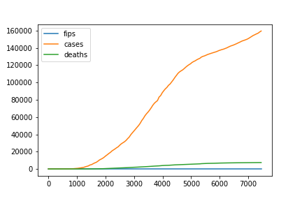

See the Illinois numbers visualized below
The following graphic shows the rise of covid deaths and cases from the onset of covid until the July in the state of Illinois. The numbers were gathered from the New York Times dataset. As can be seen cases far outweight the number of deaths. But both are roughly correlated and show the steep rise followed by a slight. The curve of Illinois is slightly different than the overall US curve in that Illinois locked down sooner and was also insulated from the coasts where covid first emerged. More differences can be see on the comparison page which aggregates the visualizations for easy comparison.
